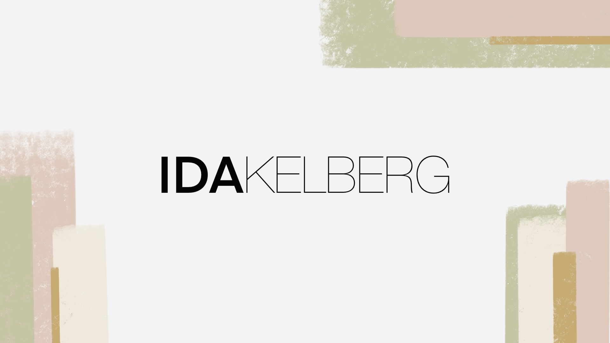

Jeg hedder Ida Spens Kelberg, er 23 år gammel og multimediedesigner.
Jeg søgte ind på multimediedesigner uddannelsen da jeg gerne vil styrke min evne til at tænke kreativt.
Jeg har altid elsket at arbejde med design, og ønskede derfor at lære alle værktøjerne til at udarbejde et godt design.
Jeg har altid elsket idéen om at kunne udarbejde et produkt, og producere noget som andre mennesker kan få glæde af.
Jeg ser mig selv som et perfektionistisk menneske, og nægter at gøre tingene halvt.
Igennem min uddannelse, har jeg fået et stort kendskab til en masse programmer. - Herunder adobe programmerne: Photoshob, XD, illustrator, indesign, premiere pro og After effects. Derudover HTML og CSS.
Desuden arbejder jeg altid med designprincipper og brugervenlighed.

Et koncept og en website til et fiktivtrumrejse program
Et website der solgte et krydstogt til månen, til den ældre målgruppe
Min rolle i projektet, var at udvikle en booking side til vores website. Derudover i samspil med gruppemedlemmer at idéudvikling, og designe websitet.

At udvikle en mobilsite til en danseskole og promovere dansen zumba
Vi opstillede en problemstilling der lød:
"Hvordan får vi flere mænd til at danse zumba?" og udviklede derefter et website og et koncept hvor målgruppen er mænd.
"Roomba Zumba" som vi kaldte os, er tænkt til at være en form for aktivitet, hvor Zumba og øl-smagning kombineres.
Derfor er vores design på vores side tænkt til at skulle fange målgruppen.
Min rolle i projektet, var at udvikle en "om os" side til vores website. Derudover i samspil med gruppemedlemmer at idéudvikling, og designe websitet.
At udvikle en idé, og lave en digital løsning til idéen
En app hvor u-handy og handy mennesker mødes.
Konceptet går ud på at u-handy mennesker kan lægge en let opgave ud på appen - som fx. at få hængt et spejl op.
En handy person i nærområdet kan tilbyde at komme forbi og hjælpe med opgaven. Det hele gøres for et mindre beløb end hvad en normal håndværker ville koste,
for hvem gider at betale en håndværker for at komme og hjælpe med så små opgaver?
Min rolle i dette projekt, var først i samspil med gruppemedlemmer at udvikle en idé. Da konceptet er min idé, blev jeg derfor tovholder i udviklingen af idéen. Derudover at designe og udvikle en prototype til vores app, samt udvikle "kontakt os" siden på vores website
At designe og udvikle en Wordpress hjemmeside for kunde, i samspil med kunde
En wordpress hjemmeside designet i XD og lavet i Wordpress.
At designe og udvikle hjemmesiden i samspil med kunden. At lytte til kundens behov og designe derefter. Derudover at bruge wordpress som værktøj
Find mit cv her:
CV